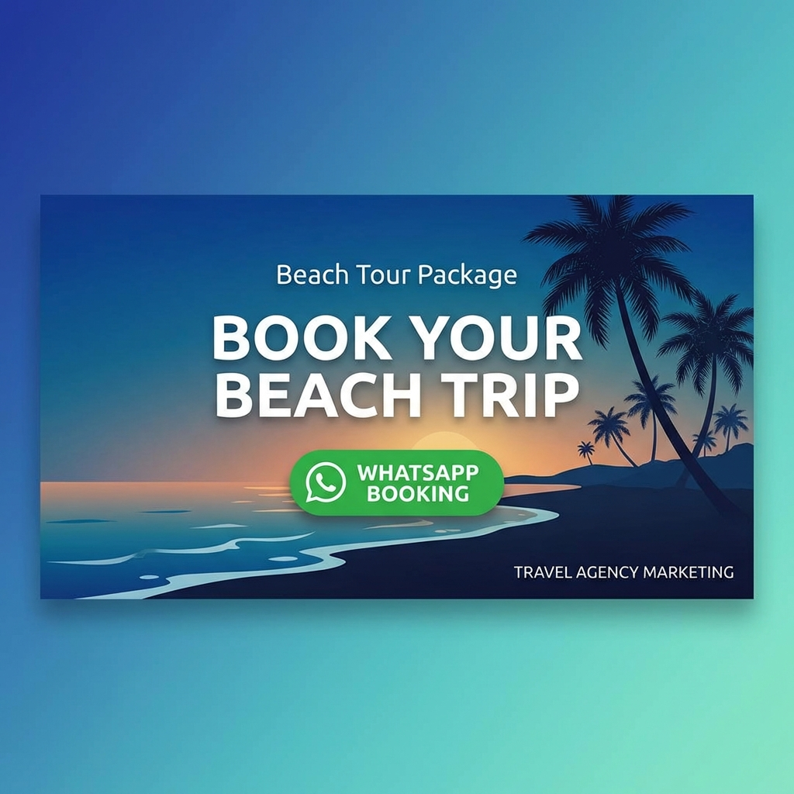

Malang Selatan menyimpan deretan pantai eksotis yang masih alami dan belum seramai destinasi wisata mainstream. Garis pantai sepanjang lebih dari 100 kilometer ini menawarkan keindahan alam yang beragam—mulai dari pasir putih bersih, tebing karang dramatis, laguna tersembunyi, hingga terumbu karang yang menjadi surga snorkeling. Tidak heran jika kawasan ini dijuluki sebagai "Hidden Paradise of East Java".
Jika Anda memiliki waktu luang 3 hari 2 malam, Anda bisa menjelajahi destinasi-destinasi terbaik di Malang Selatan dengan itinerary yang kami susun khusus ini. Panduan lengkap ini mencakup rute perjalanan detail, estimasi biaya, tips praktis, hingga rekomendasi penginapan terbaik agar liburan Anda berjalan lancar tanpa kendala.
Mengapa Harus ke Pantai Malang Selatan?
Berbeda dengan pantai-pantai di Bali atau Lombok yang sudah sangat komersial, pantai-pantai di Malang Selatan masih menawarkan nuansa autentik dan ketenangan. Beberapa alasan mengapa destinasi ini layak masuk bucket list Anda:
- Masih Alami dan Bersih: Sebagian besar pantai belum tersentuh pembangunan masif, sehingga keindahan alamnya masih terjaga.
- Keragaman Landscape: Setiap pantai memiliki karakteristik unik—ada yang berpasir putih, hitam, berbatu karang, bahkan laguna tersembunyi.
- Akses Semakin Baik: Infrastruktur jalan menuju kawasan ini terus diperbaiki, memudahkan wisatawan berkunjung.
- Budget Friendly: Harga tiket masuk, kuliner, dan penginapan masih sangat terjangkau dibanding destinasi pantai populer lainnya.
- Surga Snorkeling: Beberapa pantai seperti Tiga Warna dan Teluk Asmara memiliki terumbu karang yang masih sehat untuk snorkeling.
Persiapan Penting Sebelum Berangkat
Agar perjalanan berjalan lancar, pastikan Anda mempersiapkan hal-hal berikut:
1. Reservasi Pantai Tiga Warna
Pantai Tiga Warna menerapkan sistem kuota ketat—maksimal 100 pengunjung per hari. Reservasi WAJIB dilakukan minimal 1-2 minggu sebelumnya melalui website resmi atau menghubungi pengelola. Tanpa booking, Anda tidak akan bisa masuk meski sudah tiba di lokasi.
2. Pilih Kendaraan yang Tepat
Jalanan menuju beberapa pantai cukup menantang dengan tanjakan dan belokan tajam. Gunakan mobil atau motor matic dengan kondisi prima. Jika tidak ingin repot menyetir, sewa layanan antar jemput dari Maroon Travel adalah pilihan praktis.
3. Bawa Perlengkapan Snorkeling
Untuk menghemat biaya, sebaiknya bawa peralatan snorkeling sendiri. Di lokasi memang tersedia penyewaan, namun harganya relatif mahal (Rp 50.000-100.000/set) dan ketersediaannya terbatas.
"Pantai Malang Selatan adalah bukti bahwa Indonesia masih menyimpan banyak surga tersembunyi yang menunggu untuk dijelajahi. Tidak perlu ke luar negeri untuk menikmati laut biru dan pasir putih."
Itinerary Lengkap 3 Hari 2 Malam
Berikut adalah panduan perjalanan detail yang bisa Anda ikuti atau modifikasi sesuai preferensi:
HARI 1: Malang → Pantai Balekambang

HARI 2: Pantai Tiga Warna & Teluk Asmara
HARI 3: Pantai Watu Leter → Pulang
🏖️ Mau Explore Pantai Malang Selatan Tanpa Ribet?
Maroon Travel menyediakan paket tour lengkap dengan transportasi nyaman, guide lokal, dan reservasi Tiga Warna sudah diurus!
Tanya Paket via WhatsAppEstimasi Biaya Trip
Berikut perkiraan biaya yang perlu Anda siapkan untuk trip 3 hari 2 malam (per orang, asumsi rombongan 4 orang):
| Item | Estimasi Biaya |
|---|---|
| Transportasi (BBM + Tol) | Rp 150.000 |
| Tiket Masuk Balekambang | Rp 15.000 |
| Tiket Masuk Goa Cina | Rp 10.000 |
| Tiket Masuk Tiga Warna (termasuk guide) | Rp 100.000 |
| Tiket Masuk Watu Leter | Rp 10.000 |
| Penginapan 2 Malam | Rp 200.000 |
| Makan (6x makan utama) | Rp 180.000 |
| Sewa Alat Snorkeling | Rp 50.000 |
| Lain-lain (parkir, tip, dll) | Rp 50.000 |
| TOTAL | Rp 765.000 |
*Catatan: Biaya bisa lebih hemat jika membawa perlengkapan snorkeling sendiri dan memilih penginapan budget. Atau bisa lebih tinggi jika memilih akomodasi premium.
Tips Tambahan agar Trip Makin Seru
- Datang di Weekday: Pantai-pantai akan jauh lebih sepi dan Anda bisa menikmati keindahannya dengan lebih leluasa.
- Bawa Dry Bag: Untuk melindungi HP dan barang elektronik saat snorkeling atau trekena ombak.
- Pakai Sunblock: Matahari di pantai sangat terik, terutama jam 10.00-15.00. Aplikasikan sunblock SPF 50+ secara berkala.
- Bawa Bekal Makanan: Khususnya untuk hari ke-2, karena di area Tiga Warna tidak ada warung makan.
- Siapkan Fisik: Trekking ke Tiga Warna cukup menguras tenaga. Pastikan kondisi tubuh fit sebelum berangkat.
"Liburan ke pantai bukan sekadar berenang dan berjemur. Ini tentang melepas penat, menyatu dengan alam, dan mengisi ulang energi untuk kembali menghadapi rutinitas."
Kesimpulan
Malang Selatan adalah destinasi sempurna bagi Anda yang ingin menikmati keindahan pantai tanpa hiruk pikuk keramaian. Dengan itinerary 3 hari 2 malam ini, Anda bisa mengeksplorasi setidaknya 5-6 pantai dengan karakteristik berbeda—dari yang ramai dan ikonik seperti Balekambang, hingga yang tersembunyi dan eksklusif seperti Tiga Warna.
Kunci sukses trip ini adalah persiapan matang, terutama reservasi Pantai Tiga Warna yang wajib dilakukan jauh-jauh hari. Selain itu, pilih waktu kunjungan di musim kemarau untuk cuaca optimal dan pengalaman snorkeling terbaik.
Jika Anda tidak ingin repot mengurus transportasi, reservasi, dan akomodasi sendiri, Maroon Travel siap membantu dengan paket tour lengkap yang sudah mencakup semua kebutuhan perjalanan. Hubungi kami sekarang untuk konsultasi gratis dan dapatkan penawaran spesial!